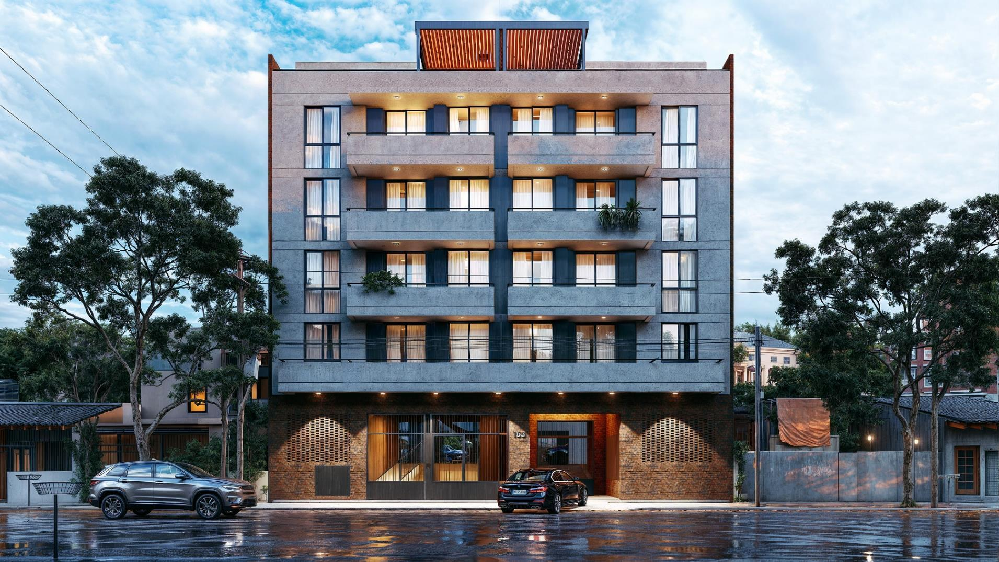
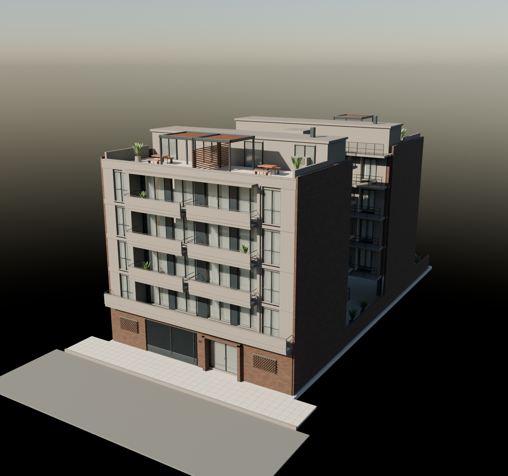
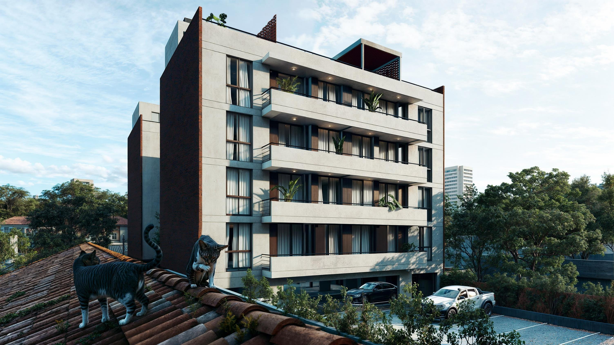
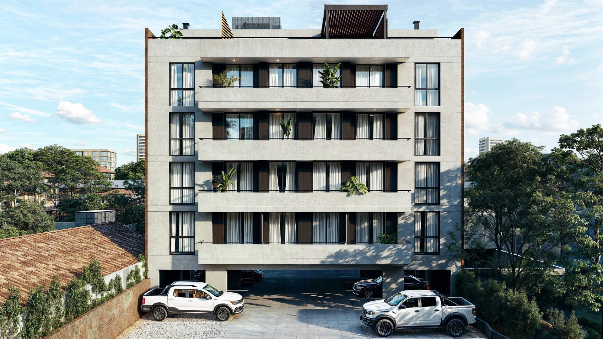
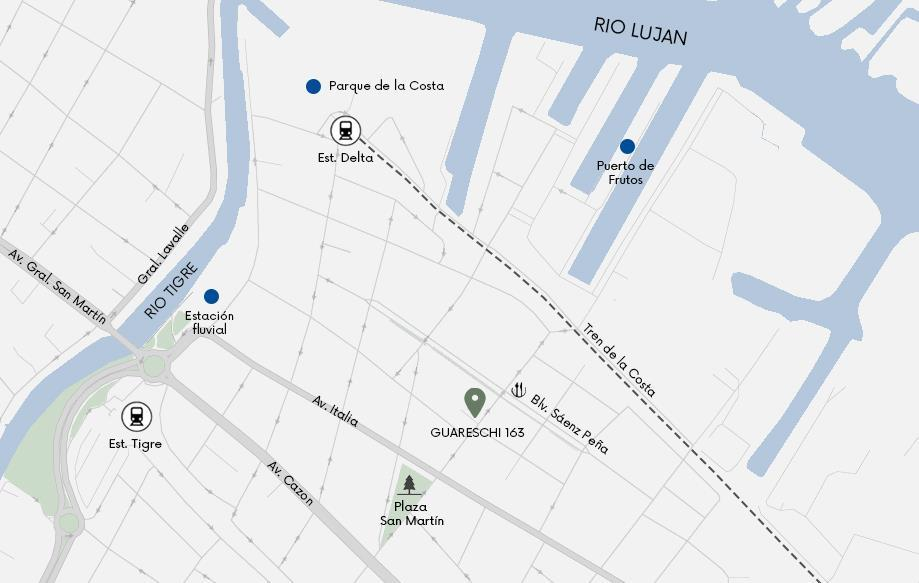

GUARESCHI 163 · TIGRE
Una nueva
perspectiva
de Tigre.
Espacios para vivir hacia afuera.
Balcones, terrazas y arquitectura contemporánea.
19unidades
1 · 2 · 3ambientes
4dúplex

OTRO PUNTO DE VISTA
Recorré cada ángulo.
Arrastrá para girar. Acercate con la rueda
o con dos dedos desde el celular.
Reconstrucción interpretativa del exterior y las tipologías del PDF. El visor permite destacar unidades, aislarlas y cortar por planta. No sustituye los planos arquitectónicos.
Descargar edificio 3D ↓MATERIALIDAD & ESPACIO
Una arquitectura
para mirar de cerca.
Revoque texturado, ladrillo visto y carpinterías oscuras. Dos cuerpos separados por un patio central, con balcones y terrazas que abren los espacios al exterior.
- Vida al aire libre
- Balcones y terrazas propias en los dúplex.
- Espacios compartidos
- SUM y terraza con parrilla.
- Accesos
- Cocheras y bicicletero techado.

EL PROYECTO ORIGINAL
La visión de Guareschi 163.
Imágenes incluidas en la presentación.
Referencias para la reconstrucción.


EN EL CORAZÓN DE TIGRE
Cerca del río.
Cerca de todo.
El terreno se encuentra en la calle Guareschi, entre Cnel. Morales y Sáenz Peña, a poca distancia del Río Luján.
Está situado cerca de la estación de tren Tigre de la línea Mitre, y a cinco cuadras de la Estación Delta del Tren de la Costa, en una ubicación central próxima al Puerto de Frutos de Tigre.
Guareschi 163 · Tigre · Buenos Aires
Abrir en Google Maps
Mapa de referencia del brochure. Activá Google Maps para explorar la ubicación.